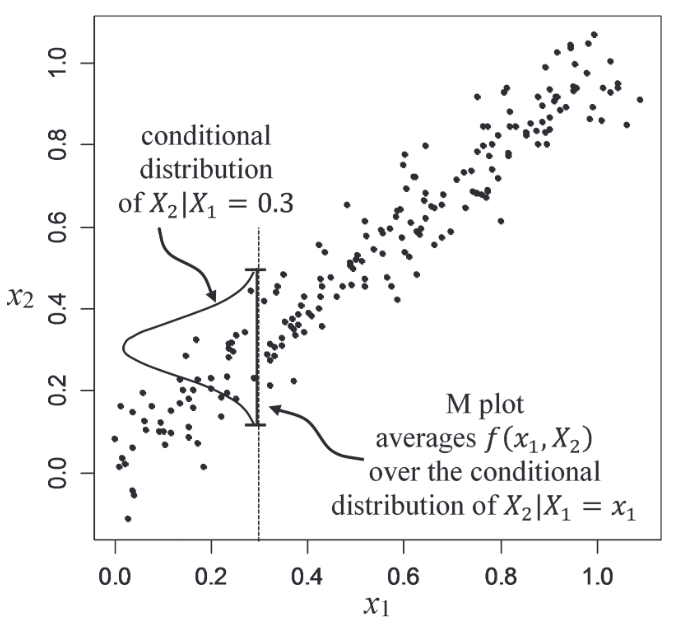
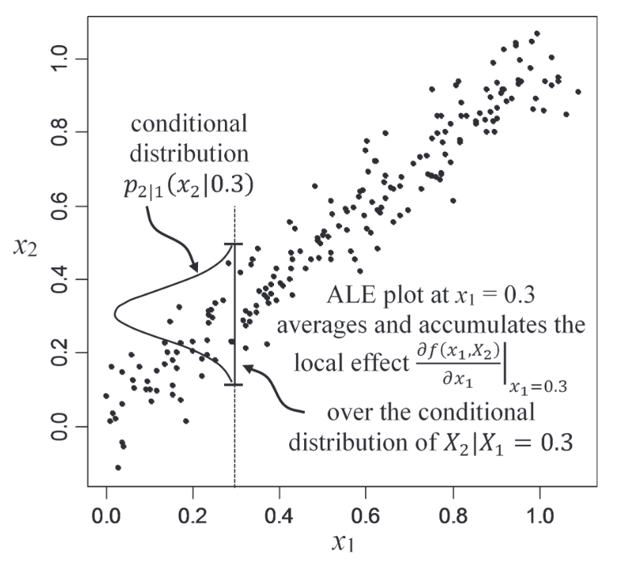
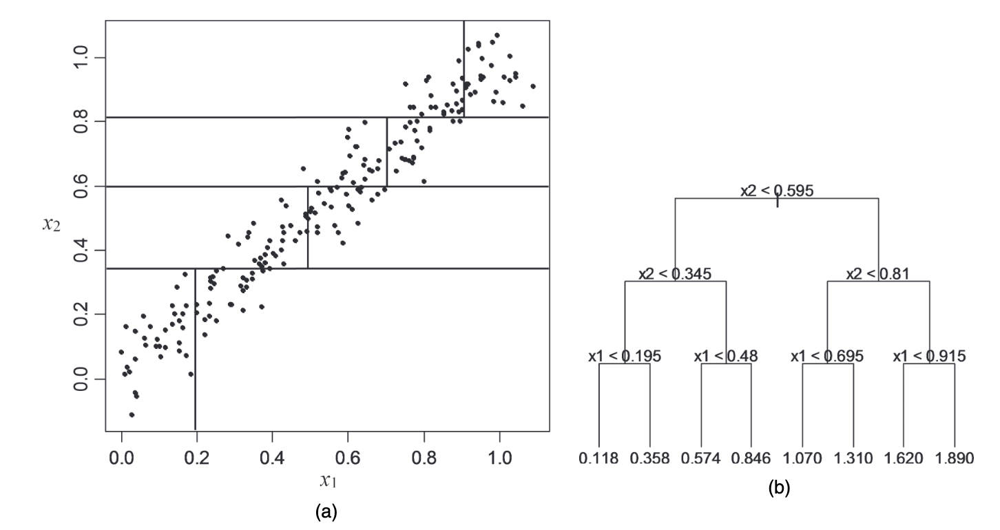
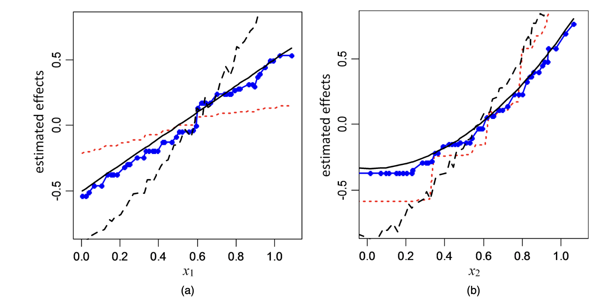
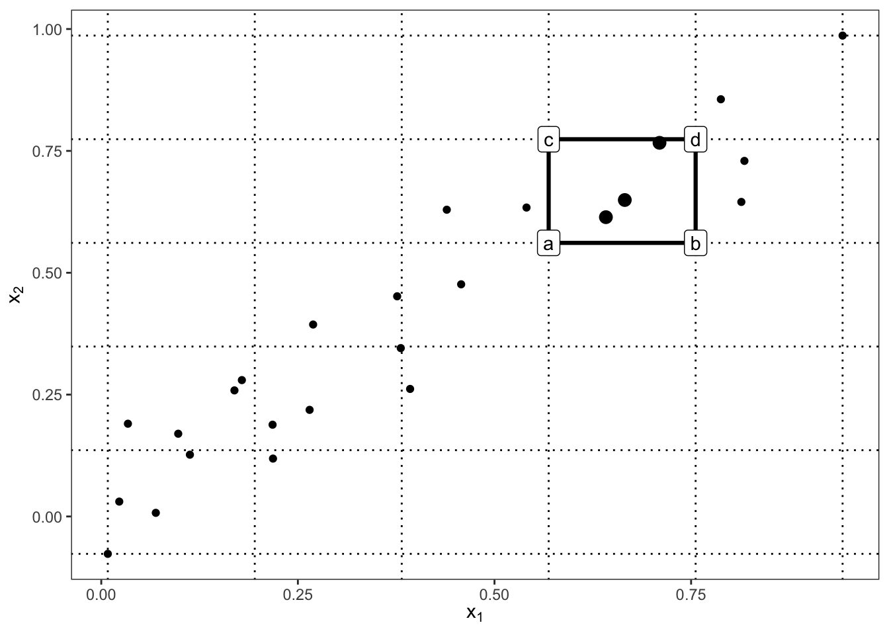

Modern machine learning models can produce accurate predictions while being difficult to interpret. Accumulated Local Effects (ALE) is a model agnostic interpretation method designed to answer the question:
How does a particular feature influence the model’s predictions?
Its goal is to summarize how the prediction of a fitted model changes as one feature changes, while accounting for the dependence between features. ALE plots are similar to Partial Dependence Plots (PDPs), but they are more robust to correlated features and can provide more accurate interpretations in such cases.
1 Motivation
1.1 Partial Dependence
For simplicity, first consider the two-dimensional case \(\mathbf X=(X_1, X_2)\). The partial dependence function of \(X_1\) is defined as:
where \(p_2(x_2)\) is the marginal distribution of \(X_2\). Given observations \(\{x_i=(x_{i,1}, x_{i,2}): i=1, \ldots, n\}\), the estimate of Equation 1 is given by
Figure 1 illustrate the weakness of PD. Apley and Zhu (2020) construct dependent predictors lying approximately along a line. The PD function is estimated by averaging the predictions over the marginal distribution of \(X_2\). However, this can lead to unrealistic combinations of features that do not occur in the data, resulting in misleading interpretations.
1.2 Marginal Effects
An alternative approach is to replace the marginal density by the conditional density. We define the marginal-plot function:
where \(N(x_1)\subset \{1, \ldots, n\}\) is the subset of row indices \(i\) for which \(x_{i, 1}\) is close to \(x_1\), and \(n(x_1)\) is the number of such rows.

Figure 2: How \(f_{1, M(x_1)}\) is estimated.
Figure 2 shows that this keeps the evaluation close to the observed data cloud. However, the M-plot is like regressing \(Y\) on \(X_1\) while ignoring \(X_2\). If both predictors affect the response and the predictors are dependent, then the apparent effect of \(X_1\) includes some of the effect of \(X_2\). This is called omitted variable bias and can lead to misleading interpretations.
2 Accumulated Local Effects (ALE)
The central idea of ALE is to work with local changes of the fitted function rather than prediction levels. For two predictors and a differentiable fitted function, Apley and Zhu (2020) first introduce
where \(x_{\min, 1}\) is some value chosen near the lower bound of the effective support of \(p_1(\cdot)\). This construction can be explained in three stages. First, calculate the local effect \(f^{1}(x_1, x_2)\) at each observation \((x_{i,1}, x_{i,2})\). Second, average these local effects over the conditional distribution of \(X_2\) given \(X_1=x_1\). Third, integrate the averaged local effects over \(x_1\) to obtain the ALE function.

Figure 3: Computation of \(f_{1, \ALE}(x_1)\).
Figure 3 visualizes the computation of \(f_{1, \ALE}(x_1)\) at \(x_1=0.3\). Instead of evaluating \(f\) over an entire vertical line as PD does, ALE works with local changes near points supported by the conditional distribution.
2.1 Uncertered ALE main effect
Equation 3 assumes differentiability, while models such as trees are not differentiable.
We assume that \(\mathbf{X}\) is continuous and has compact support \(\mathcal{S}\), and let the support of \(X_j\) be interval \(\mathcal S_j=[x_{\min,j}, x_{\max,j}]\) for each \(j\in \{1, 2, \ldots, d\}\). For a partition with \(K\) intervals, we write
As \(K\to \infty\), we have \(\delta_{j, K}\to 0\). Let \(X_{\\ j}\) denote all predictors except \(X_j\).
Definition 1 (Uncentered ALE main effect) Provided the limit exists and is independent of the particular sequence of partitions, the uncentered ALE main (which is also known as the first-order) effect of \(X_j\) is defined as
Apley and Zhu (2020) then show that the finite-difference definition can be reduced to the derivative representation under regularity conditions.
Theorem 1 (Uncentered ALE Main Effect for differentiable \(f\)) Let \(f^{j}(x_j, \mathbf{x}_{\\ j}) \coloneqq \frac{\partial f(x_j, \mathbf{x}_{\\ j})}{\partial x_j}\) denote the partial derivative of \(f\) with respect to \(x_j\) when it exists. In Definition 1, suppose that
\(f\) is differentiable in \(x_j\) on \(\mathcal S\),
\(f^{j}\) is continuous in \((x_j, \mathbf {x}_{\\ j})\) on \(\mathcal S\), and
\(\E[f^j(X_j, \mathbf{X}_{\\ j})\mid X_j=z_j]\) is continuous in \(z_j\) on \(\mathcal S_j\).
At first glance, \(\int \frac{\partial f(x_j, \mathbf{x}_{\\ j})}{\partial x_j} dz_j\) may seem to be equal to \(f(x_j, \mathbf{x}_{\\ j})\). However, this is not the case because the integral is taken with respect to \(z_j\), while the partial derivative is taken with respect to \(x_j\). Consequently, differentiation first isolates the local effect of \(X_j\), conditional averaging restricts the calculation to the observed data cloud, and integration reconstructs the cumulative across the range of \(X_j\).
We can also define the (centered) ALE main effect of \(X_j\), which is denoted by \(f_{j, \ALE}(x_j)\) and is obtained by centering the uncentered ALE main effect:
Suppose \(f(x) = \sum_{j=1}^d f_j(x_j)\) is an additive function. Then, both ALE and PD recover the true component \(f_j(x_j)\) up to an additive constant:
\[
f_{j, \ALE}(x_j) = f_j(x_j) + C_j.
\]
Thus, when the fitted prediction function is additive, the ALE main-effect curve recovers the individual predictor effect regardless of how black-box the model is. However, if the fitted function is not additive, then the ALE main effect is not equal to the true component \(f_j(x_j)\), but it still provides a useful summary of the effect of \(X_j\) on the prediction.
3 Estimating and Construction of an ALE Plot
In practice, ALE plots are estimated from a fintie dataset. To be summarized, this can be done by replacing the infinite sequence of increasingly fine partitions by a fixed partition and replace the conditional expectation by sample averages.
Suppose \(X_j\) is divided into \(K\) intervals \((z_{0,j}, z_{1,j}], (z_{1,j}, z_{2,j}], \ldots, (z_{K-1,j}, z_{K,j}]\). Let \(N_j(k)=(z_{k-1,j}, z_{k,j}]\) be a fine partition of the sample range of \(X_j\).
For every observation \(i\in N_j(k)\), we then evaluate the fitted model \(f(z_{k, j}, \mathbf x_{i,\\j})\) and \(f(z_{k-1, j}, \mathbf x_{i, \\j})\) and compute the difference
For observation \(i\), how much does the fitted prediction change when \(X_j\) moves across interval \(k\), with all remaining predictors fixed at their observed values?
Theorem 2 (Consistency of the ALE main effect estimator) Consider a sequence of partitions \(\{\mathcal P_j^K: K=1, 2, \ldots\}\) as in Definition 1 such that \(\delta_{j, K}\to 0\) as \(K\to \infty\). Denote the estimator (Equation 5) of the uncentered ALE main effect of \(X_j\) using partition \(\mathcal P_j^K\) and sample size \(n\) by
where \(\mathbb{I}(\cdot)\) denotes the indicator function of an event. Assume that \(\{\mathbf{X}_i: i=1,2, \ldots\}\) is an i.i.d. sequence of random vectors drawn from \(p(\cdot)\), and let \(P\) denote the probability measure on the underlying probability space of this random sequence. Let
denote the finite-\(K\) version of \(g_{j, \ALE}(x)\) in Equation 4 using the same partition \(\mathcal P_j^K\) as the estimator. Then \(\hat g_{j, \ALE, K, n}(x)\) is a strongly consistent estimator of \(g_{j, \ALE, K}(x)\) in the following sense. For each \(x\in \mathcal S_j\), each \(\epsilon>0\), and each \(K\),
with \(|g_{j, \ALE, K}(x) - g_{j, \ALE}(x)| < \epsilon\) if \(K\) is sufficiently large.
Moreover, there exists a sequence of sample size \(\{n_K: K=1, 2, \ldots\}\) such that, as \(K\to \infty\), \(\hat g_{j, \ALE, K, n_K}(x) \to g_{j, \ALE}(x)\) both in probability and in mean.
The importance of this result is that the ALE main effect estimator is consistent, meaning that as the sample size increases and the partition becomes finer, the estimated ALE main effect converges to the true ALE main effect. This provides a theoretical guarantee for the reliability of ALE plots in practice.
3.2 Interval width and stability
If \(K\) is too small, intervals are wide and the differences are not local.
If \(K\) is too large, each interval contains relatively few observations and the estimated conditional averages can become noisy. Thus, the choice of \(K\) is a trade-off between bias and variance. Quantile partitions help by keeping roughly similar numbers of observations in each interval, but for a strong skewed predictors, quantile intervals may have very different widths.
4 Reading an ALE Plot
4.1 Interpreting the ordinate
Because the ALE main effect is centered, \(\E[\hat f_{j, \ALE}(X_j)] = 0\). Suppose \(f_{j, \ALE}(x_j)=-2\). The interpretation is that the main effect associated with \(X_j=x_j\) lowers the model prediction by approximately 2 response units relative to the predictor’s average main effect Molnar (n.d.). A value of zero means that the accumulated effect at that predictor value is at the centered average reference level.
4.2 Interpreting the slope
The local behavior of the curve is often more informative than its absolute height. If
then the fitted prediction tends to increase as \(X_j\) increase in that region, and vice versa.

Figure 4: Depiction of the first eight splits in the tree fitted to the example data

Figure 5: Fot the tree model fitted to the example data, plot of ALE, PD, M, and the true main effect of \(X_j\)
5 Second Order ALE Effects
Let \(X_j\) and \(X_l\) be two predictors. We define \(\mathbf{X}_{\\ j, l}\) to be all remaining predictors.
Definition 2 (Uncentered ALE second-order effect) Consider any pair \(\{j, l\}\subseteq \{1, \ldots, d\}\) and corresponding sequences of partitions \(\{\mathcal P_j^K: K=1, 2, \ldots\}\) and \(\{\mathcal P_l^K: K=1, 2, \ldots\}\) such that \(\lim_{K\to \infty} \delta_{j, K} = \lim_{K\to \infty} \delta_{l, K} = 0\). When \(f(\cdot)\) and \(p\) are such that the following limit exists and is independent of the particular sequences of partitions, we define the uncentered ALE second-order effect function of \((X_j, X_l)\) as (for \((x_j, x_l)\in \mathcal S_j\times \mathcal S_l\))
is the second-order finite difference of \(f(\mathbf x)=f(x_j, x_l, \mathbf x_{\\\{j, l\}})\) with respect to \((x_j, x_l)\) across cell \((z_{k-1,j}^K, z_{k,j}^K]\times (z_{m-1,l}^K, z_{m,l}^K]\) of the 2-D grid that is the Cartesian product of \(\mathcal P_j^K\) and \(\mathcal P_l^K\).
This looks like a jump-scare. For a simple understanding, consider a rectangular cell with \(X_j\)-boundaries \((z_{k-1,j}^K, z_{k,j}^K]\) and \(X_l\)-boundaries \((z_{m-1,l}^K, z_{m,l}^K]\). The second-order finite difference \(\Delta_{f}^{\{j, l\}}(K, k, m; \mathbf{x}_{\\ j, l})\) is the difference between the two first-order finite differences of \(f(\mathbf x)\) with respect to \(x_j\) at the two \(X_l\)-boundaries of the cell. It measures how much the effect of \(X_j\) on the prediction changes as \(X_l\) moves across its interval, and vice versa.

Figure 6: Calculation of 2D-ALE. The 2nd-order difference is (d-c) - (b-a).
6 Simulation Studies
The theory above gives us the recipe. The simulation below turns that recipe into a small modular workflow:
Generate data from a known nonlinear regression function.
Fit either a random forest or a spline regression.
Estimate PD, M, and ALE curves from the fitted model.
Compare each estimated curve with the known centered main effect.
Keeping each step in a function makes the rest of the story easier to extend. After the first single-sample demonstration, we reuse the same functions to vary the sample size and then to run many independent replications.
import numpy as npimport pandas as pdimport matplotlib.pyplot as pltfrom sklearn.ensemble import RandomForestRegressorfrom sklearn.linear_model import LinearRegressionfrom sklearn.preprocessing import SplineTransformerRANDOM_SEED =6400BASE_N =100CORRELATED_RHO =0.8SAMPLE_SIZE_GRID = [100, 250, 500, 1000, 2500, 5000]EFFECT_GRID = np.linspace(-2.326, 2.326, 100)FEATURES = ("X1", "X2")MODEL_TYPES = ("rf", "spline")def sigmoid(x):return1/ (1+ np.exp(-x))def simulate_data(n, rho=0.0, seed=RANDOM_SEED):"""Generate one dataset from the known data-generating mechanism.""" rng = np.random.default_rng(seed)if rho ==0: x1 = rng.normal(0, 1, n) x2 = rng.normal(0, 1, n)else: cov_matrix = [[1, rho], [rho, 1]] x1, x2 = rng.multivariate_normal(mean=[0, 0], cov=cov_matrix, size=n).T x3 = rng.binomial(1, 0.4, n) mu = np.sqrt(5) * sigmoid(x1 + x3) + np.sqrt(5) * sigmoid(x2) * x3 y = mu + rng.normal(0, 1, n) x = pd.DataFrame({"X1": x1, "X2": x2, "X3": x3})return x, yX, Y = simulate_data(BASE_N, rho=0.0, seed=RANDOM_SEED)print(X.head())print(Y[:5])
where \(\sigma(t)=1/(1+\exp(-t))\). Since \(X_3\sim \text{Bernoulli}(0.4)\) is independent of \(X_1\) and \(X_2\), the true centered main effects for \(X_1\) and \(X_2\) are known. That gives us a reference curve for judging the fitted PD, M, and ALE curves.
Next we define two model-fitting functions. Each one returns a small bundle containing the fitted model name and a prediction function. This avoids relying on global model objects and lets the same plotting code work for either model.
Now we implement 1D ALE. For interval \((z_{k-1}, z_{k}]\), we use observations in that interval to compute \(f(z_{k}, \mathbf{x}_{i, \\ j}) - f(z_{k-1}, \mathbf{x}_{i, \\ j})\) and average them. Then we accumulate these averages to get the ALE function:
ALE is centered so that \(\E[\hat f_{j, \ALE}(X_j)] = 0\). PD and M-plots, however, are displayed on the prediction scale. If we draw them together, differences in vertical position would reflect differences in the average prediction of the model, which is not the goal. To make them comparable, we center PD and M-plots by subtracting their mean.
To make the true curve stable across replications, we center it using a large reference sample from the marginal \(N(0, 1)\) distribution of each continuous predictor.
TRUE_CENTER_REFERENCE = np.random.default_rng(2024).normal(0, 1, 200_000)def raw_true_effect(feature, x):if feature =="X1":return np.sqrt(5) * (0.6* sigmoid(x) +0.4* sigmoid(x +1))if feature =="X2":return0.4* np.sqrt(5) * sigmoid(x)raiseValueError("feature must be 'X1' or 'X2'")def true_effect(feature, grid, center="population", X=None): effect = raw_true_effect(feature, grid)if center =="population": reference_effect = raw_true_effect(feature, TRUE_CENTER_REFERENCE)elif center =="sample":if X isNone:raiseValueError("X must be supplied when center='sample'") reference_effect = raw_true_effect(feature, X[feature].to_numpy())else:raiseValueError("center must be 'population' or 'sample'")return effect - np.mean(reference_effect)
The next function computes all four curves on a shared grid. ALE is naturally estimated at bin centers, so for visual comparison and replication summaries we interpolate it back onto the same display grid used by PD and M.
The plotting function is also modular. It accepts the tidy curve data returned by run_one_simulation(), so the same function can be reused for the independent, correlated, sample-size, and replication-band simulations.
Because the \(X_1\), \(X_2\) and \(X_3\) are independent, we cannot see the PD-M-ALE differences. Let’s introduce correlation between \(X_1\) and \(X_2\) to see the differences.
It is useful to visualize the correlation between \(X_1\) and \(X_2\).
plt.figure(figsize=(7, 5))plt.scatter(X_correlated["X1"], X_correlated["X2"], alpha=0.5)plt.xlabel("X1")plt.ylabel("X2")plt.title("Correlation between X1 and X2")plt.show()
The single correlated sample tells one story, but it does not show whether the curves are stable. We next reuse the same pipeline over a grid of sample sizes from (n=100) to (n=5000). Each panel uses one simulated dataset at that sample size, so the point is visual: small (n) curves fluctuate more, while large (n) curves should settle toward their population targets.
The sample-size grid still uses only one dataset per (n). To ask whether a curve is reliably close to the true effect, we need repeated datasets. The function below runs independent replications, stores the PD, M, ALE, and true curves on the same grid, and then summarizes the empirical distribution of each estimated curve at each grid point.
Apley, Daniel W., and Jingyu Zhu. 2020. “Visualizing the Effects of Predictor Variables in Black Box Supervised Learning Models.”Journal of the Royal Statistical Society Series B (Statistical Methodology) 82 (4): 1059–86. https://doi.org/10.1111/rssb.12377.